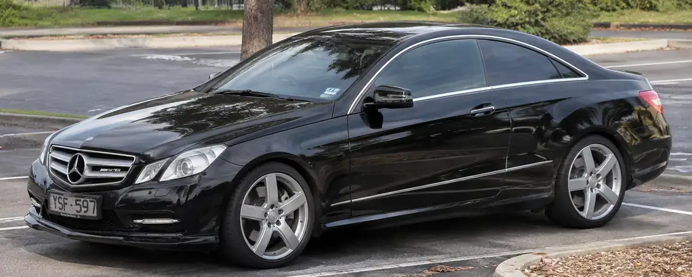
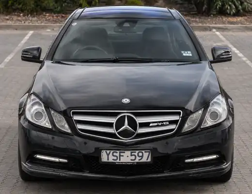

In the garage · Mercedes-Benz · 2011
E 250 CDI
BlueEFFICIENCY Coupé
A Bremen-built E-Class coupe in Obsidian Black, with black leather and the OM651 diesel. My current Mercedes, and the car behind MBLink.
- Power
- 150 kW
- Torque
- 500 Nm
- Engine
- 2.143 litre diesel
Originally delivered to Australia, this right-hand-drive, pre-facelift C207 brings two interests together: Mercedes engineering and my MBLink diagnostic software.
Panoramic roof · COMAND navigation · Heated front seats · Intelligent Light System


Full vehicle record
- Chassis / Baumuster
- C207 · 207.303Right-hand drive
- Engine
- 2,143 cc dieselOM651
- Power / torque
- 150 kW · 500 Nm204 PS · factory specification
- Transmission
- 5-speed automatic722.646
- Paint
- Obsidian Black197U
- Upholstery
- Black / AnthraciteLeather · 251A
Factory identity
- VIN
- WDD2073032F129158
- Original delivery
- Australia
- Make
- Mercedes-Benz
- Model
- E 250 CDI Coupé
- Engine number
- 651911 30 638336
- Transmission number
- 722646 08 520376
- Order number
- 0 1 901 08524
- Production number
- 1789426
Dates & delivery
- Production
- 12 May 2011Previously recorded
- Release
- 13 May 2011
- Delivery
- 13 May 2011
- Order location
- Australia Association
- Factory
- Bremen
- Emissions
- Euro 5
Ownership & modifications
- Registration
- YSF597
Factory equipment · 69 codes
| Code | Description |
|---|---|
| 051 | AEJ 20/2 |
| 062 | YOM 10/1 Group 2 |
| 108 | Control code marketing |
| 197U | Obsidian Black |
| 205B | Owners manual and service record — English |
| 213 | Speed-sensitive power steering / Vario steering |
| 230 | Parking guidance |
| 236 | Adaptive rear interior light |
| 241 | Electrically adjustable left driver seat with memory |
| 250A | Leather |
| 251A | Leather — Black / Anthracite |
| 275 | Memory package: driver seat, steering column, mirror |
| 283B | Airbag label — English |
| 291 | Pelvis airbag |
| 293 | Sidebags in rear left and right |
| 305B | Head unit language — British English |
| 310 | Dual cup holder |
| 335B | Instrument cluster / head unit language — English |
| 413 | Panoramic sliding sunroof / glass sunroof |
| 423 | 5-speed automatic transmission |
| 474 | Diesel particulate filter |
| 477 | Tyre pressure loss warning |
| 518 | Universal Communications Interface (UCI) |
| 51U | Black fabric roof interior trim |
| 527 | COMAND DVD APS with navigation |
| 580 | Air conditioner |
| 600 | Headlamp cleaning equipment |
| 608 | Automatic high beam switch (IHC) |
| 619 | Cornering illumination |
| 621 | Headlamp with ILS — left-hand traffic |
| 625 | Version for Australia |
| 668 | Freight protection packaging with tie-down hooks |
| 690 | Emergency spare tyre (mini spare) |
| 700 | Update of injection system series production configuration |
| 736 | Black ash wood trim (2A70) |
| 801 | AEJ 00/1 R 170 AEJ 99/2 |
| 810 | Premium sound system |
| 863 | TV tuner digital to analogue |
| 873 | Heated left and right front seats |
| 901L | Australia Association |
| 919 | Aircon cooling power package |
| 928 | Exhaust gas cleaning with Euro 5 technology |
| 9XXL | Australia / Pacific |
| B12 | Wheel replacement tool |
| F207 | Model series 207 |
| FC | Coupé |
| G646 | Transmission code version 46 |
| GA | Automatic transmission |
| HA | Rear axle |
| K10 | Software control for static curve illumination |
| K11 | Adaptive stop light flashing |
| K13 | Service interval control code — 25,000 km |
| M014 | Engine increased performance |
| M22 | Displacement 2.2 litre |
| M651 | R4 diesel engine M651 |
| NA1 | Bremen plant control code |
| NB6 | Bremen plant control code |
| P35 | Light package (FFO) |
| P64 | Front memory package |
| R | Right-hand steering |
| R01 | Summer tyres |
| R11 | No description in supplied record |
| U01 | Rear belt status indication |
| U18 | Automatic child seat recognition (AKSE) |
| U60 | Pedestrian protection — active engine bonnet |
| U74 | DVD player — regional code 4, Mexico, South America |
| V56 | Speed + load index 94W |
| VL | Front axle half — left |
| VR | Front axle half — right |
Factory equipment transcribed from the supplied vehicle datacard.